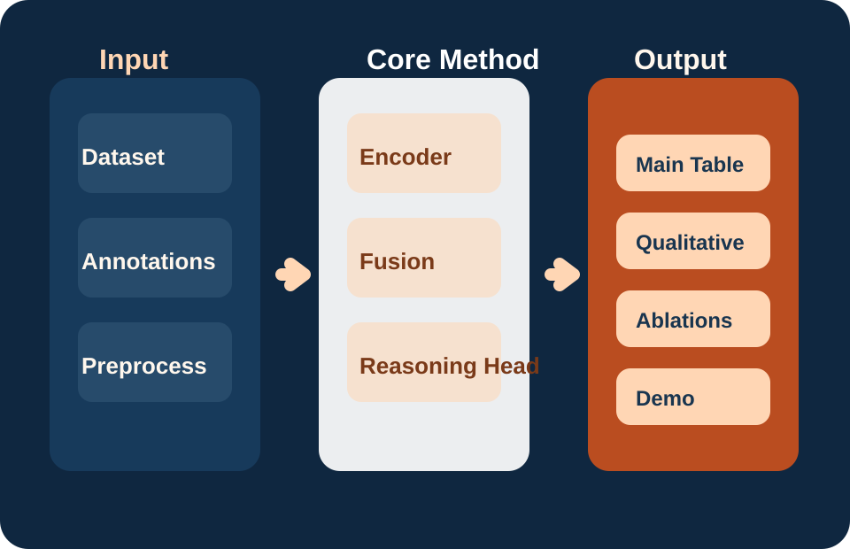
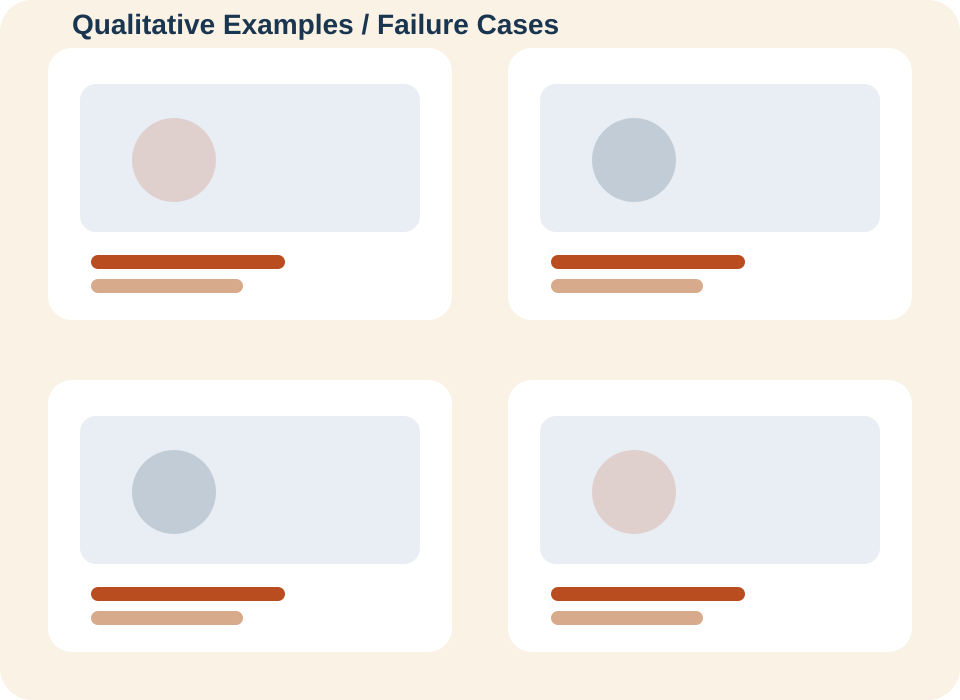

Main Contribution
Talk about the main contribution by this paper in a modular way
The page is intentionally modular. Structure lives in this file, styling lives in
components/site.css, behavior lives in
components/site.js, and the placeholder visuals live under
asset/.
{kind=link}
Hero + Links
Title, venue badge, author list, affiliations, and the standard paper/code/dataset buttons.
Technical Story
Dedicated sections for abstract, method, results, and qualitative highlights.
Reusable Assets
Placeholder SVGs are easy to swap with teaser images, benchmark plots, or demo stills.
Abstract
One small step for benchmarking, one giant step for engineering AI
We introduce DrawingVQA, the first benchmark designed to evaluate multimodal large language models (MLLMs) on real-world construction drawings—a core media in architecture, civil, and many other engineering practices. Unlike natural images or schematic floor plans, construction drawings fuse abstract geometry, symbolic notation, tabular data, annotations, and domain-specific text, forming a uniquely complex visual–textual domain core to engineering workflows. DrawingVQA bridges this gap with 33 “Issued for Construction” drawings and 92 expertly curated question–answer pairs, spanning three reasoning depths: perceptual understanding, contextual interpretation, and domain-expert reasoning. To evaluate model capabilities, we present a dual categorization framework to jointly analyze performance across seven construction-engineering and four MLLM capability dimensions-- the first to explicitly map engineering workflows to AI reasoning competencies. Evaluations of state-of-the-art MLLMs reveal a substantial gap between model and expert performance, particularly at higher reasoning depths. This benchmark lays a foundation for domain-specialized multimodal reasoning to allow for advancement on integration of AI-driven understanding and real-world engineering workflows.
What is Construction Level Drawing (IFC)?
IFC Level Drawings are mediums used by engineering and construction professionals everyday on a project. It is a binding contract document that governs how a building should be built.
Method
Explain the pipeline before the numbers
Most CVPR visitors want an overview first, then a deeper breakdown of the novel components.

Problem Setup
Define the task, inputs, outputs, and evaluation target in one short block.
Model or Benchmark Design
Summarize the distinctive architecture, data construction, or protocol changes.
Training + Evaluation
Call out datasets, supervision, and the metrics used in the main table.
Results
Show the main table and a quick interpretation
| Method | Metric A | Metric B | Metric C |
|---|---|---|---|
| Baseline 1 | 71.2 | 64.8 | 58.1 |
| Baseline 2 | 74.6 | 67.3 | 60.4 |
| Ours | 79.9 | 71.5 | 65.7 |
Key takeaway
Spell out the one result that matters most instead of forcing visitors to infer it from raw numbers.

Resources
Package the assets visitors actually want
Paper PDF
Link the camera-ready or arXiv version.
Open paperCode Repository
Point to the training, evaluation, and demo entry points.
Open repoDataset / Demo
Attach the benchmark, demo space, or downloadable annotations.
Open datasetCitation
Keep the BibTeX one copy away
@inproceedings{drawingvqa2026,
title = {DrawingVQA: A Real-World Benchmark for Multi-Depth Visual-Textual Reasoning on Construction Drawings},
author = {Yoonhwa Jung and Junryu Fu and Mani Golparvar-Fard},
booktitle = {Proceedings of the IEEE/CVF Conference on Computer Vision and Pattern Recognition},
year = {2026}
}